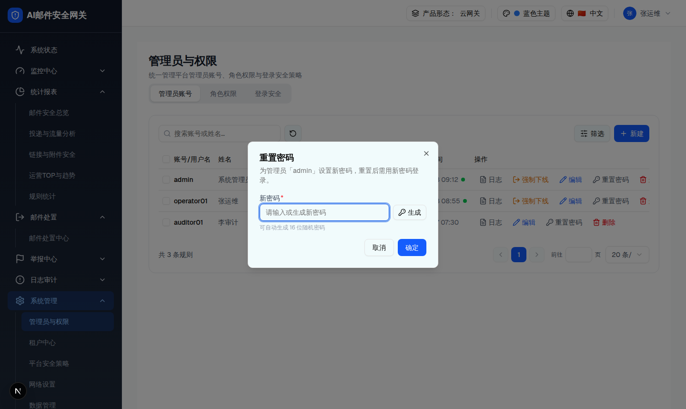
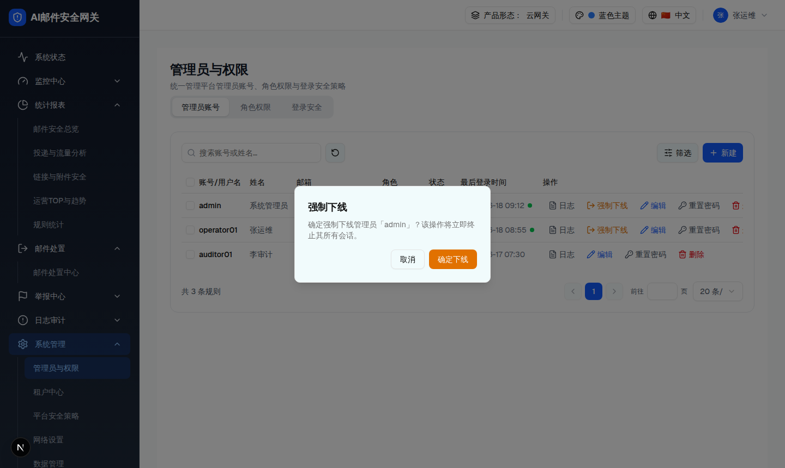
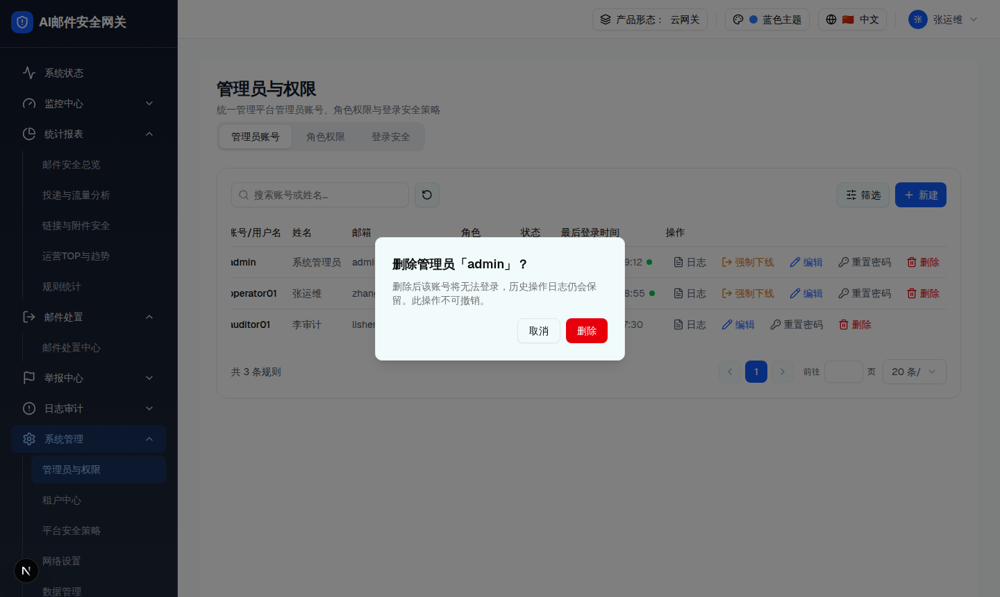
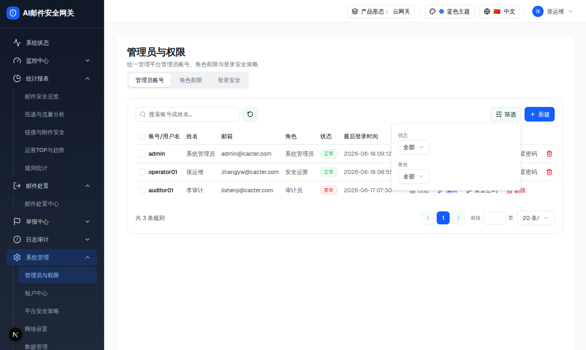
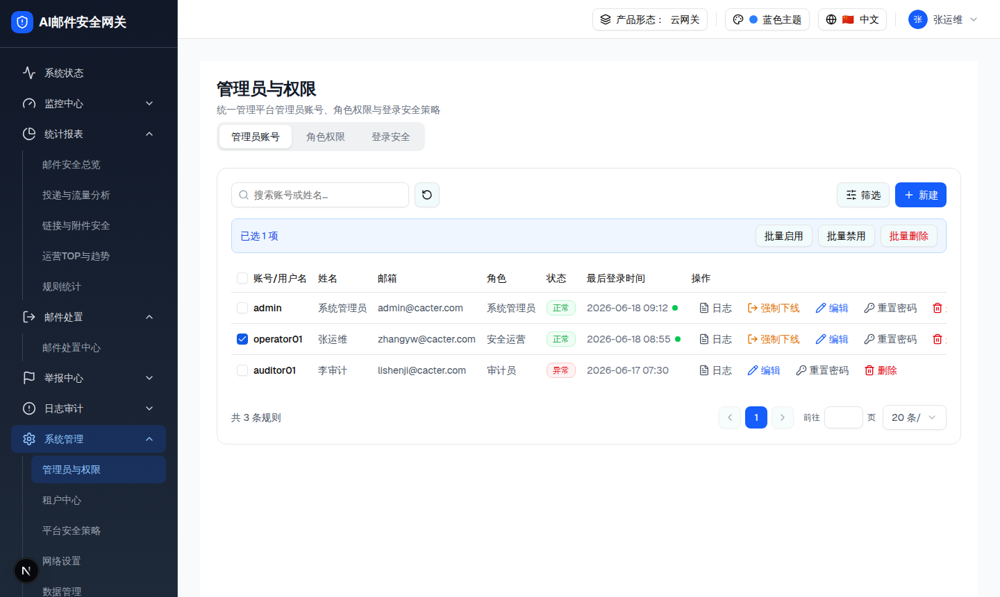

| 属性 | 规格 | 形态/角色差异 |
|---|---|---|
| 所属组件 | 2.2 管理员账号 Tab（AdminAccountTab） | [Base] 全形态共用 |
| 主文件 | admin-users/index.html | [Base] — |
| 触发路径 | 行「重置密码」/「强制下线」/「删除」；工具栏「筛选」；勾选复选框 → 批量操作栏 → 「批量删除」 | [Base] 一致 |
| demo 组件 | admin-account-tab.tsx 的 <Dialog>（重置密码）+ 3×<AlertDialog> + <Popover>（筛选，复用 mail-routing ListToolbar） | [Base] 一致 |
setResetTarget(a)。可交互：点「生成」填 16 位随机密码；有值时出现「复制密码」。为管理员「admin」设置新密码，重置后需用新密码登录。

| # | 元素 | 说明 | 形态/角色差异 |
|---|---|---|---|
| 1 | 新密码 Input(text) + 生成 | 校验 checkPasswordAgainstPolicy（默认策略）；失败 Toast 首条错误 | [Overlay] 落地应按 scope 策略校验 |
| 2 | 复制密码 | 有值时显示；navigator.clipboard.writeText → Toast「密码已复制」 | [Base] 一致 |
| 3 | 确定/取消 | 确定成功 → Toast「密码已重置」并关闭 | [Base] 一致 |
| 比对项 | demo 实际 DOM | 提取的 HTML | 是否一致 |
|---|---|---|---|
| 弹窗根 | [role=dialog].sm:max-w-[400px]（23 节点） | 同 | 一致 |
| 标题/描述 | 「重置密码」/「为管理员「admin」设置新密码…」 | 同 | 一致 |
| 复制密码 | 仅 resetPwd 非空时渲染 | 生成后显示（JS 复刻） | 一致 |
确定强制下线管理员「admin」？该操作将立即终止其所有会话。
删除后该账号将无法登录，历史操作日志仍会保留。此操作不可撤销。
删除后这些账号将无法登录，历史操作日志仍会保留。此操作不可撤销。


| 弹窗 | 确认按钮 | 业务约束 | 成功 Toast | 形态/角色差异 |
|---|---|---|---|---|
| 强制下线 | 确定下线（amber） | - | 已强制下线 | [Base] 一致 |
| 删除 | 删除（red） | 最后 1 个系统管理员不可删（Toast「系统至少保留一个启用的系统管理员」） | 管理员已删除 | [平台管理员] 最后系统管理员保护；[租户管理员] 不存在系统管理员角色 |
| 批量删除 | 删除（red） | 含最后系统管理员则整体拦截 | 已批量删除 | [平台管理员] 需保护 role_sys；[租户管理员] 仅当前租户 |
| 比对项 | demo 实际 DOM | 提取的 HTML | 是否一致 |
|---|---|---|---|
| 弹窗根 | 3× [role=alertdialog].sm:max-w-[360px] | 同 | 一致 |
| 强制下线文案 | 「确定强制下线管理员「admin」？…终止其所有会话。」 | 同（浏览器提取原文） | 一致 |
| 删除文案 | 「删除后该账号将无法登录，历史操作日志仍会保留。此操作不可撤销。」 | 同 | 一致 |
| 多状态合并 | demo 同一时刻仅 1 个弹窗 | 3 弹窗并排嵌入便于审查 | 已修正：并排展示 |


| 元素 | 选项/说明 | 形态/角色差异 |
|---|---|---|
| 筛选·状态 | 全部 / 正常 / 异常 | [Base] 一致 |
| 筛选·角色 | 全部 + 当前作用域角色（租户视角剔除系统管理员）；筛选计数徽标 | [Overlay] 选项按 scope |
| 批量启用/禁用 | 对 selected 批量置状态（跳过 CURRENT_ADMIN_ID）；Toast「已批量启用/禁用」 | [Base] 当前账号保护 |
| 批量删除 | 打开批量删除确认（见 2b） | [Overlay] 平台侧额外保护最后系统管理员 |
| 比对项 | demo 实际 DOM | 提取的 HTML | 是否一致 |
|---|---|---|---|
| Popover 内容 | [data-radix-popper-content-wrapper]，含 状态/角色 两个 Select（全部） | 同（状态/角色） | 一致 |
| 批量栏 | .bg-blue-50.border-blue-200「已选 1 项」+ 3 按钮 | 同 | 一致 |
| 批量删除按钮色 | 红字 text-red-600 | 同 | 一致 |